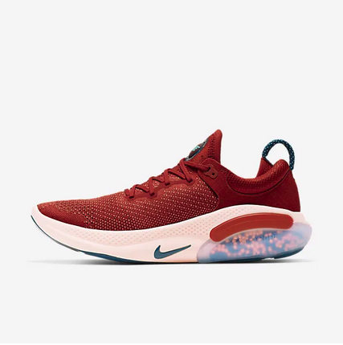
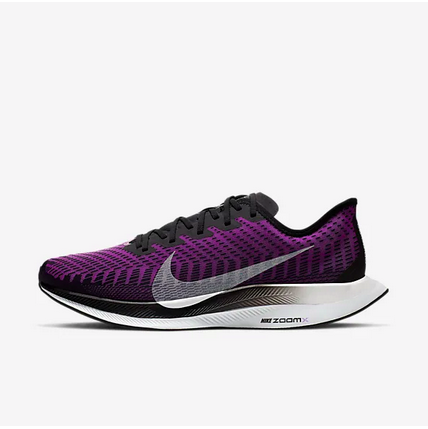
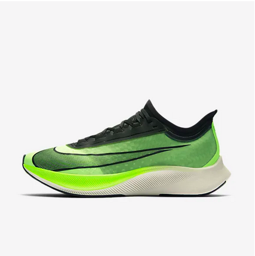
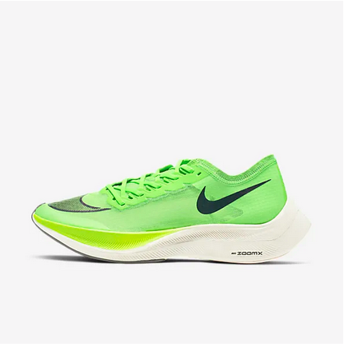
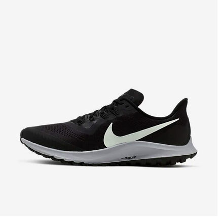
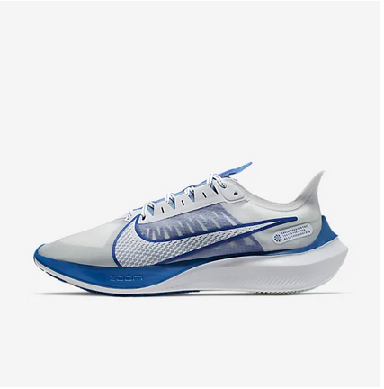

Inspire
Your best sportswear
Sports fabrics are technical materials which help to keep the wearer comfortable during exercise.
The type of fabric required will depend upon the intensity of the exercise and the activity.
Sports fabrics are technical materials which help to keep the wearer comfortable during exercise.
The type of fabric required will depend upon the intensity of the exercise and the activity.
Joyride Run Flyknit is designed to help make running feel easier and give your legs a day off. Tiny foam beads underfoot contour to your foot for cushioning that stands up to your mileage.
Goes bigger than ever before with tallest Air unit yet, which offers more air underfoot for unimaginable, all-day comfort. Has Air Max gone too far? We hope so.
Pegasus Turbo 2 is updated with a feather-light upper, while innovative foam brings revolutionary responsiveness to your long-distance training.c
Inspired by the Vaporfly, the Zoom Fly 3 gives distance runners race-day comfort and durability. The propulsive power of a carbon-fibre plate keeps you in the running mile after mile.
Designed to make fast go faster, the Gravity is built to take you from quick tempo runs to winning races. Snappy forefoot propulsion and grippy, multi-surface traction combine to maximize your stride.
takes a step up from its predecessor with smooth, lightweight performance and a bold look.Underfoot, durable React technology defies the odds by being both soft and responsive, for comfort that lasts as long as you can run.
